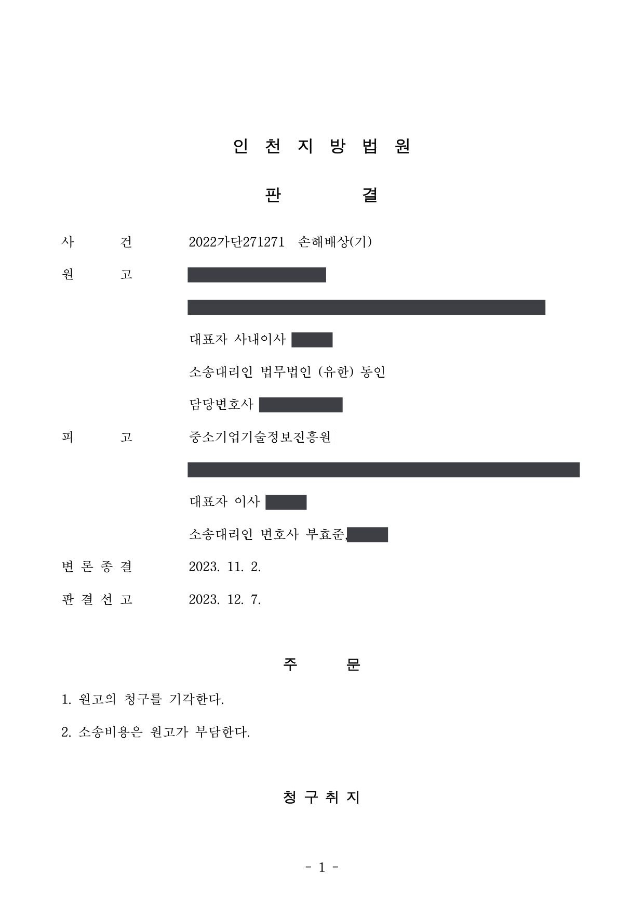

국가연구개발사업 과제 평가를 둘러싼 손해배상 청구소송
인천지방법원 2022가단271271 · 담당변호사 부효준
판결문

사건의 요지
과제 특별정산 과정에서 전문기관이 기업이 우편으로 보낸 서류 원본을 분실한 데 대하여 기술자료 재작성 비용과 예상 수익 등 약 3억 7,500만 원의 손해배상이 청구된 사건입니다. 법원은 서류 분실과 손해 사이의 상당인과관계를 부정하여 청구를 받아들이지 않았습니다.
사건의 주요 내용
원고 회사는 전동기·드론 등을 제조하는 기업으로, 2017년 창업성장기술개발사업 창조경제 연계과제에 선정되어 2017년 7월 전문기관과 협약을 맺고 사업비 1억 원을 지원받아 2017년 6월부터 2018년 5월까지 '무철심 소형 모터 기술 개발 과제'를 수행하였습니다. 과제 종료 후 관리기관의 문제과제 처리 요청과 특별점검을 거쳐 2019년 특별평가에서 개발결과의 기술성과 성실성이 떨어지고 사업비 집행 소명이 부족하다는 이유로 '중단' 평가를 받았습니다.
전문기관은 2020년 4월 사업비 특별정산을 위해 정산검토서류를 이메일 또는 등기우편으로 제출하도록 안내하였고, 원고 회사는 회계감사보고서, 시험성적서, 연구노트, 도면 등 서류 원본을 우편으로 보냈습니다. 전문기관은 2021년 5월 사무실 이전 과정에서 이 서류를 분실한 상태에서 특별정산검토위원회를 열었고, 이의신청 심의를 거쳐 한 연구원의 인건비 10,102,000원을 불인정하여 세금을 제외한 8,917,809원의 납부를 요청하였습니다.
원고 회사는 전문기관이 서류를 분실하여 개발한 기술을 쓸 수 없게 되었다며 도면·데이터 재작성과 시험성적서 재발급 비용 149,670,136원, 인건비 환급액 8,917,809원, 3년간 예상 매출의 5%에 해당하는 순이익 216,750,000원 등 합계 375,337,945원의 손해배상을 청구하였습니다. 부효준 변호사는 전문기관을 대리하였습니다.
쟁점
- 전문기관이 기업이 제출한 정산검토서류 원본을 분실한 경우, 기술자료 재작성 비용과 예상 수익 상실 등 기업이 주장하는 손해와 분실 사이에 상당인과관계가 있는지
- 정산서류 원본을 우편으로 제출하고 사본·전자파일을 폐기한 것이 전문기관의 요구에 따른 것인지, 기업 자신의 선택인지
- 분실된 연구노트가 남아 있었다면 참여연구원 인건비가 인정되었을 것인지
원고의 주장
- 전문기관의 안내에 따라 정산검토서류 원본을 우편으로 제출하고 보안을 위해 사본을 모두 폐기하였는데, 전문기관이 선량한 관리자의 주의로 보관할 의무를 어기고 서류를 분실하여 과제로 개발한 기술을 전혀 사용할 수 없게 되었다고 주장하였습니다.
- 연구원의 과제 참여를 입증할 연구노트를 보냈는데도 전문기관이 이를 분실한 채 특별정산을 하여 인건비가 불인정되었으므로 환급액 8,917,809원도 손해라고 주장하였습니다.
- 개발한 기술로 제품을 양산하여 공급할 예정이었으나 생산하지 못하여 3년간 매출과 수익을 올리지 못하였으므로 그 순이익 상당의 손해를 배상해야 한다고 주장하였습니다.
부효준 변호사의 주장
- 정산검토서류는 이메일 제출이 원칙으로 안내되었고 종합관리시스템을 통한 전자 제출 관행에서도 원본을 요구한 적이 없으며, 안내문의 '원본을 현장에 준비' 문구는 현장방문 방식으로 정산할 때 증빙 원본을 갖추어 두라는 뜻이므로, 원본 제출은 원고 회사가 스스로 선택한 것이라고 주장하였습니다.
- 설계도면과 회로도는 CAD 등 전자파일로 만들어진 것이어서 출력물을 원본으로 보고 전자파일을 폐기하였다는 주장은 납득하기 어렵고, 그러한 폐기가 품질경영시스템 표준이나 업계 관행이라는 근거도 없으므로 손해는 원고 회사의 사본 폐기에서 비롯된 것이라고 반박하였습니다.
- 문제된 연구원의 연구노트는 특별점검 뒤 사후에 다시 작성된 것이고 원고 회사 스스로 그 연구원이 정산업무를 담당하였다고 진술하였으므로, 서류가 분실되지 않았더라도 인건비가 인정되었을 것이라고 볼 수 없어 분실과 환급 사이에 인과관계가 없다고 주장하였습니다.
법원의 판단
법원은 전문기관이 원고 회사로부터 제출받은 서류를 제대로 보관하지 못하고 분실한 사실은 인정하였습니다. 그러나 원고 회사가 주장하는 손해는 원고 회사 자신의 잘못으로 발생한 것이어서 서류 분실과 손해 사이에 상당인과관계를 인정할 수 없다고 보아, 손해액을 따질 필요 없이 청구를 받아들이지 않았습니다.
구체적으로, 전문기관은 정산서류를 이메일로 제출하도록 요구하였고 등기우편도 가능하다고 안내한 것이 원본 제출을 요구한 것으로 해석되지 않으며, '원본을 현장에 준비' 문구는 현장방문 방식 정산에 관한 것이므로 원본 제출은 원고 회사가 임의로 한 것이라고 판단하였습니다. 또한 도면 등은 전자파일 형태로 존재하였던 것이어서 출력물을 원본으로 삼고 전자파일까지 폐기한 것은 전적으로 원고 회사의 잘못이라고 보았습니다.
인건비 환급액에 관해서도, 원고 회사가 과제 종료 뒤까지 연구노트를 제대로 작성하지 않아 점검 과정에서 거듭 지적받았고 제출된 150쪽의 연구노트는 사후에 재작성된 것이며 원고 회사 스스로 그 연구원이 정산업무를 담당하였다고 진술한 점에 비추어, 서류가 분실되지 않았더라도 인건비가 인정되지 않았을 가능성이 크다고 하여 인과관계를 부정하였습니다.
앞서 본 바와 같이 피고가 원고로부터 제출받은 서류를 제대로 보관하지 못하고 분실한 사실은 인정된다.
그러나 아래에서 보는 바와 같이 원고가 주장하는 손해는 원고 자신의 잘못에 의하여 발생한 것이고 그 손해 발생과 피고의 서류 분실 사이에 상당인과관계를 인정할 수 없다. 따라서 원고의 주장은 손해액에 관하여 더 나아가 살펴볼 필요 없이 이유 없다.
인천지방법원 2022가단271271 판결 이유 '3. 판단 — 가., 나.'
그렇다면 피고의 요구로 원본을 제출하였다는 원고의 주장은 인정하기 어렵고, 결국 원본 서류의 제출은 원고가 자신의 판단에 따라 임의로 제출한 것으로 보아야 한다.
만일 원고가 당초 피고의 안내대로 정산관련서류를 이메일로 송부하였다면 대부분의 기술관련 자료가 전자파일 형태로 그대로 남아있었을 것임에도 원고가 자신의 선택으로 원본 서류를 제출하면서 사본을 모두 폐기하고 보관하지 아니한 것은 전적으로 원고의 잘못으로 보아야 한다.
인천지방법원 2022가단271271 판결 이유 '3. 나. 1) 원고의 원본 서류 제출 잘못 — 라)', '2) 원고의 원본 파일 폐기 잘못 — 라)'
※ 판결 이유 가운데 이 사건의 판단 기준이 된 부분을 그대로 옮긴 것으로, 당사자 이름 등은 가렸습니다.
이 사건이 보여 주는 것
전문기관의 서류 분실이라는 잘못이 인정되더라도, 그로 인한 손해를 배상받으려면 분실과 손해 사이의 상당인과관계가 필요합니다. 이 판결은 이메일 제출이 안내된 정산서류를 임의로 원본 우편 제출하고 사본과 전자파일까지 폐기한 것은 기업 스스로의 선택이므로, 기술자료를 쓸 수 없게 된 손해와 예상 매출 손실은 전문기관에 돌릴 수 없다고 본 것입니다.
인건비 불인정에 대한 손해 주장도, 연구노트가 과제 수행 당시 제대로 작성되지 않았고 사후에 재작성된 것이라면 서류가 남아 있었더라도 결과가 달라졌을 것이라고 보기 어렵다는 이유로 받아들여지지 않았습니다. 연구노트는 과제 수행 중에 작성하고, 전문기관에 제출하는 자료는 반드시 사본과 전자파일을 보관해 두어야 합니다.
비슷한 처분을 받으셨다면
국가연구개발 제재처분은 사전통지를 받은 날부터 20일 이내에 재검토 요청 의견을 내고, 처분이 있음을 안 날부터 90일 이내에 취소소송을 제기해야 합니다. 처분서나 사전통지서를 받은 날짜부터 확인해 드립니다.